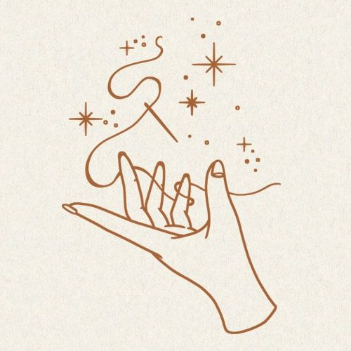
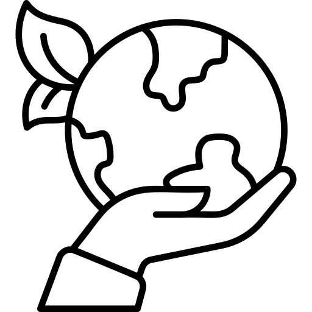
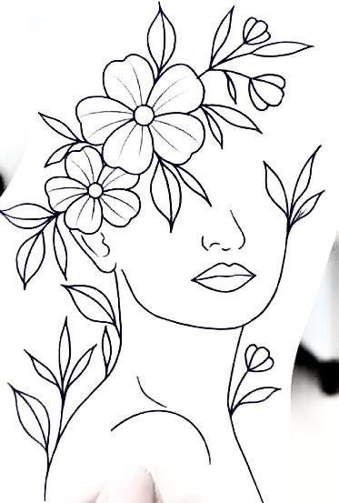
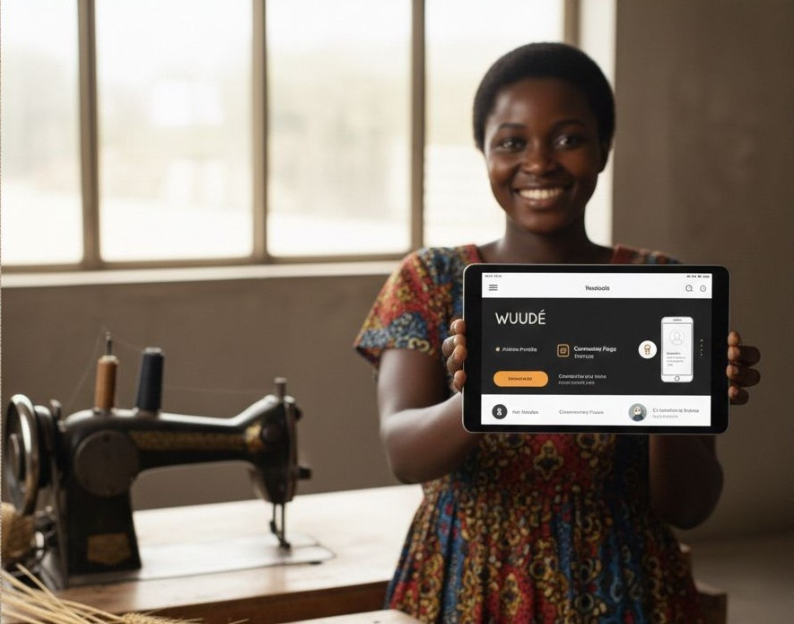

WUUDÉ est née de la volonté de créer un pont entre tradition et modernité. Face à la sous-valorisation de l'artisanat local et du travail des femmes, la marque propose une alternative durable, esthétique et engagée, ancrée dans l'identité sénégalaise.


Inspirée du mot « oudé », mot wolof qui fait référence à la cordonnerie, WUUDÉ a adopté un W pour symboliser les femmes, piliers de la création et de la transmission du savoir-faire.
La marque propose des accessoires uniques, conçus à partir de matières variées telles que le raphia, les tissus locaux, le bois et des matériaux recyclés, en mettant l'humain et l'impact au cœur de chaque création.
WUUDÉ travaille principalement avec des femmes artisanes locales, détentrices de savoir-faire transmis de génération en génération. À travers ce projet, la marque contribue à :
Chaque produit est le fruit d'un travail minutieux, réalisé à la main avec passion et exigence.


Valoriser le savoir-faire traditionnel sénégalais et soutenir les artisanes locales.

Utiliser des matériaux écologiques et promouvoir une consommation responsable.

Créer des opportunités d'emploi et d'indépendance économique pour les femmes.

Fusionner tradition et modernité pour créer des designs contemporains.
" Wuudé aspire à un monde où l'artisanat sénégalais devient un moteur de développement durable, créatif et inclusif, porté par la passion et le talent des femmes. "
« WUUDÉ est né de la volonté de donner une voix et une visibilité aux femmes artisanes, tout en montrant que l'artisanat africain peut être innovant, élégant et tourné vers l'avenir. »
Ndèye Astou DIEYE
WUUDÉ se distingue par son approche innovante de l'artisanat grâce au numérique :
Le digital devient ainsi un levier de transparence, de traçabilité et de connexion humaine.

Découvrez nos collections uniques et participez à l'aventure